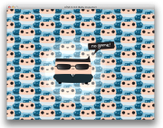

Views
0.9.0
The codename for LÖVE 0.9.0 is Baby Inspector. It is currently released.
Major changes from 0.8.0
- Added three new modules: love.window, love.math, and love.system.
- Reworked the love.joystick and love.thread modules.
- Added new features to love.graphics, including polygon meshes and vertex shaders.
- Integrated the ENet networking library via lua-enet.
- Renamed many functions to be more consistent with the rest of the API.
- Improved the performance of several APIs in love.graphics.
- And a lot more!
All changes from 0.8.0
Additions
- Added better multiplayer networking support with ENet (via the lua-enet library.)
- Added --fused command line argument, to simulate fusing.
- Added liblove.
- Added the ability to have exit values.
- Added exit value of 1 in case of error by default.
- Added basic support for the file:// URI scheme.
- Added love.timer.getAverageDelta.
- Added Data:getString.
- Added Contact:getChildren.
- Added love.filesystem.isFused.
- Added love.filesystem.getIdentity.
- Added love.filesystem.append.
- Added love.filesystem.getSize.
- Added love.filesystem.mount and love.filesystem.unmount.
- Added an optional file search order parameter to love.filesystem.setIdentity.
- Added File:isOpen and File:getMode.
- Added File:setBuffer, File:getBuffer, and File:flush.
- Added textinput event for unicode text input.
- Added love.keyboard.setTextInput and love.keyboard.hasTextInput.
- Added previously internal Rasterizer and GlyphData methods.
- Added support for UTF-8 Image Fonts.
- Added Font:getAscent, Font:getDescent, and Font:getBaseline.
- Added Font:setFilter and Font:getFilter.
- Added Font:hasGlyphs.
- Added angle, scale, and shear parameters to love.graphics.printf.
- Added support for high dynamic range (HDR) Canvases.
- Added mipmapping support to Images (has love.graphics.isSupported test).
- Added vertex shader support.
- Added boolean support to Shader:send.
- Added Canvas:getPixel.
- Added BlendMode "replace".
- Added LineJoin modes.
- Added Mesh objects, allowing for arbitrary textured polygons.
- Added multiple render target support to love.graphics.setCanvas.
- Added love.graphics.setColorMask.
- Added love.graphics.origin.
- Added love.graphics.getRendererInfo.
- Added love.graphics.getMaxImageSize.
- Added SpriteBatch:getCount and SpriteBatch:getBufferSize.
- Added SpriteBatch:getColor.
- Added ParticleSystem:emit.
- Added ParticleSystem:setInsertMode.
- Added ParticleSystem:setAreaSpread.
- Added ParticleSystem:isPaused and ParticleSystem:isStopped.
- Added many ParticleSystem getter methods.
- Added DXT compressed texture support to Images via love.image.newCompressedData.
- Added love.image.isCompressed and Image:isCompressed.
- Added Image:getDimensions, Canvas:getDimensions, and ImageData:getDimensions.
- Added anisotropic filtering support for Images, Canvases, and Fonts.
- Added Image:refresh.
- Added Image:getData.
- Added love.math module.
- Added a platform-independent (good) random implementation to love.math.
- Added RandomGenerator objects.
- Added BezierCurve objects.
- Added love.math.triangulate and love.math.isConvex.
- Added love.math.noise.
- Added love.system module.
- Added love.system.getClipboardText and love.system.setClipboardText.
- Added love.system.getOS and love.system.getProcessorCount.
- Added love.window module.
- Added love.window.isVisible.
- Added flags to love.window.setMode.
- Added monitor choosing support to love.window.setMode.
- Added support for resizable, borderless, and non-centered windows.
- Added support for "fullscreen-desktop" mode.
- Added window resize and visible events.
- Added love.window.getIcon.
- Added t.window.icon to love.conf.
- Added SoundData:getDuration and SoundData:getSampleCount.
- Added Source:isPlaying.
- Added Source:setRelative and Source:isRelative.
- Added Source:setCone and Source:getCone.
- Added Source:getChannels.
- Added new Channels API for love.thread.
- Added limited table support to Channel:push.
- Added Thread:getError.
- Added Thread:isRunning.
- Added threaderror event.
- Added love.mousefocus and love.window.hasMouseFocus.
- Added custom hardware cursor support via love.mouse.newCursor.
- Added love.mouse.setX and love.mouse.setY.
- Added Joystick objects.
- Added joystick add and remove events.
- Added joystick axis and hat move events.
- Added unified Gamepad API for joysticks which have a similar layout to the Xbox controller.
- Added joystick vibration support.
- OPTIONAL: Added support for Game Music Emu.
Removals
- Removed release mode (but Fused mode is still there.)
- Removed love.keyboard.getKeyRepeat (see love.keyboard.hasKeyRepeat).
- Removed the unicode argument from love.keypressed (see love.textinput).
- Removed love.graphics.drawTest.
- Removed love.graphics.quad and love.graphics.triangle.
- Removed ColorModes and love.graphics.setColorMode.
- Removed love.graphics.newStencil.
- Removed love.graphics.setLine and love.graphics.setPoint.
- Removed love.graphics.drawq (functionality is merged into love.graphics.draw).
- Removed SpriteBatch:addq and SpriteBatch:setq (functionality is merged into SpriteBatch:add and SpriteBatch:set).
- Removed Quad:flip.
- Removed ParticleSystem:isFull and ParticleSystem:isEmpty.
- Removed ParticleSystem:getX and ParticleSystem:getY.
- Removed love.graphics.checkMode.
- Removed love.joystick module functions which operated on individual joysticks (see Joystick objects).
- Removed joystick ball support.
- Removed thread names.
- Removed old thread messaging API (see Channels).
- Removed love.timer.getMicroTime.
Renamed APIs
- Renamed love's boot script to 'love.boot', which can be required.
- Renamed love.filesystem.mkdir to love.filesystem.createDirectory.
- Renamed love.filesystem.enumerate to love.filesystem.getDirectoryItems.
- Renamed World:setAllowSleeping and World:getAllowSleeping to World:setSleepingAllowed and World:isSleepingAllowed.
- Renamed ChainShape:setPrevVertex to ChainShape:setPreviousVertex.
- Renamed Joint:enableMotor to Joint:setMotorEnabled.
- Renamed Joint:enableLimit and Joint:isLimitEnabled to Joint:setLimitsEnabled and Joint:hasLimitsEnabled.
- Renamed t.screen to t.window in love.conf.
- Renamed love.graphics.setCaption to love.window.setTitle.
- Renamed PixelEffect to Shader (but now with vertex shaders).
- Renamed love.graphics.setDefaultImageFilter to love.graphics.setDefaultFilter.
- Renamed ParticleSystem:setSprite to ParticleSystem:setImage.
- Renamed ParticleSystem:setGravity to ParticleSystem:setLinearAcceleration.
- Renamed ParticleSystem:setLifetime and ParticleSystem:setParticleLife to ParticleSystem:setEmitterLifetime and ParticleSystem:setParticleLifetime.
- Renamed ParticleSystem:count and all getNum* functions to get*Count.
- Renamed SoundData:getBits and Decoder:getBits to SoundData:getBitDepth and Decoder:getBitDepth.
- Renamed Source:setDistance and Source:getDistance to Source:setAttenuationDistances and Source:getAttenuationDistances.
- Renamed love.mouse.setGrab to love.mouse.setGrabbed.
Fixes
- Fixed fused mode in OS X.
- Fixed printing to the console in Windows before love.load is called.
- Fixed the default love.run to not include the time taken by love.load in the first frame's dt calculation.
- Fixed the error screen not always appearing until the next input event.
- Fixed love.event.clear.
- Fixed love.mouse.setPosition when called in love.load.
- Fixed scaling in several love.physics functions.
- Fixed Box2D exception in World:update.
- Fixed many uncaught Box2D / love.physics exceptions for Bodies and Joints.
- Fixed ChainShape:getPoints running out of Lua stack space and crashing.
- Fixed File:read reading past end of file.
- Fixed love.filesystem.setIdentity not removing read access from old directories.
- Fixed possible memory leak in UTF-8 decoder.
- Fixed spacing for the last character in an Image Font.
- Fixed line wrapping in love.graphics.printf.
- Fixed love.graphics.printf to error if the wrap limit is negative.
- Fixed love.graphics.print truncating strings with embedded zeros.
- Fixed crashes with font drawing on some ATI cards.
- Fixed artifacts when drawing lines at huge scale.
- Fixed Fonts and Canvases ignoring default image filter.
- Fixed love.graphics.getLineWidth returning incorrect values.
- Fixed love.graphics.getColor on some Windows systems.
- Fixed alpha BlendMode.
- Fixed multiplicative BlendMode.
- Fixed love.graphics.getPointStyle.
- Fixed line numbers in Shader errors.
- Fixed Shader:send with Images and Canvases failing sometimes.
- Fixed Shader:send to keep a reference to sent Images and Canvases.
- Fixed crash when binding SpriteBatches multiple times.
- Fixed SpriteBatches with more than 16,384 sprites.
- Fixed draw order for ParticleSystems.
- Fixed ParticleSystem:setSizes resetting the size variation.
- Fixed love.window.getMode and friends returning wrong values when using desktop size.
- Fixed keyrepeat settings being lost after (indirect) love.window.setMode.
- Fixed the icon being reset after love.window.setMode.
- Fixed memory leak in the mp3 decoder.
- Fixed sound issues with some versions of OpenAL soft, by enabling direct channels.
- Fixed 'random' hangs in audio.
- Fixed case (in)sensitivity of sound file extension parsing.
- Fixed looping support in tracker music formats.
- Fixed skipping/looping issues when playing streaming audio Sources.
- Fixed a race condition in Source:play.
- Fixed WAVE sound playback.
Other Changes
- Moved love's startup to modules/love.
- Moved window-related functions from love.graphics to love.window.
- Updated functions which return LOVE objects to re-use the Lua-side object instead of always recreating it.
- Updated the windows console, it now tries to re-use an active one first.
- Updated error handling, error handlers now get resolved when the error occurs.
- Updated order of sleep/present in love.run (now draws, *then* sleeps).
- Updated love.keyboard.setKeyRepeat to take a boolean argument instead of numbers.
- Updated love.keypressed's second argument to indicate whether the keypress is a repeat.
- Updated keyboard key constants with some modern keyboard keys.
- Updated love.filesystem to try to create the appdata directory if it doesn't exist yet.
- Updated the default filesystem identity to omit file extension.
- Updated love.filesystem.newFile to optionally open the file.
- Updated most love.filesystem functions to return nil, error on internal failure.
- Updated love.graphics.print's x and y arguments to default to 0.
- Updated the setFilter and setWrap methods, the second argument is now optional.
- Updated Font and ParticleSystem rendering code, now more performant.
- Updated SpriteBatch code, now more performant when adding/setting and (un)binding.
- Updated Canvas code to support more systems.
- Updated Canvas:getImageData and love.graphics.newScreenshot to be more efficient.
- Updated love.graphics.newScreenshot to create a fully opaque image by default.
- Updated error messages when sending bad values to Shaders.
- Updated love.graphics.newParticleSystem to have a default buffer size of 1000.
- Updated love.image.newImageData and love.graphics.newImage to accept FileData.
- Updated ImageData:setPixel to accept a table and default to 255 alpha.
- Updated ImageData:mapPixel, is now more efficient and now accepts optional x,y,w,h arguments.
- Updated love.image memory handling, improves errors and thread-safety.
- Updated love.audio.newSource, love.sound.newDecoder, and love.sound.newSoundData to accept FileData.
- Updated allocation for SoundData, it's more efficient and less wasteful.
- Updated SoundData:setSample and SoundData:getSample to error for invalid samples.
- Updated Source:set* functions to default z to 0.
- Updated Source:seek to error for negative offsets.
- Updated Thread:start to accept arguments. The arguments are available in the thread via ... (the vararg expression.)
- Updated love.timer.getFPS to be microsecond-accurate.
- Updated love.timer.getTime to be microsecond-accurate and monotonic.
- Updated Box2D to version 2.3.
  no-game screen
no-game screen